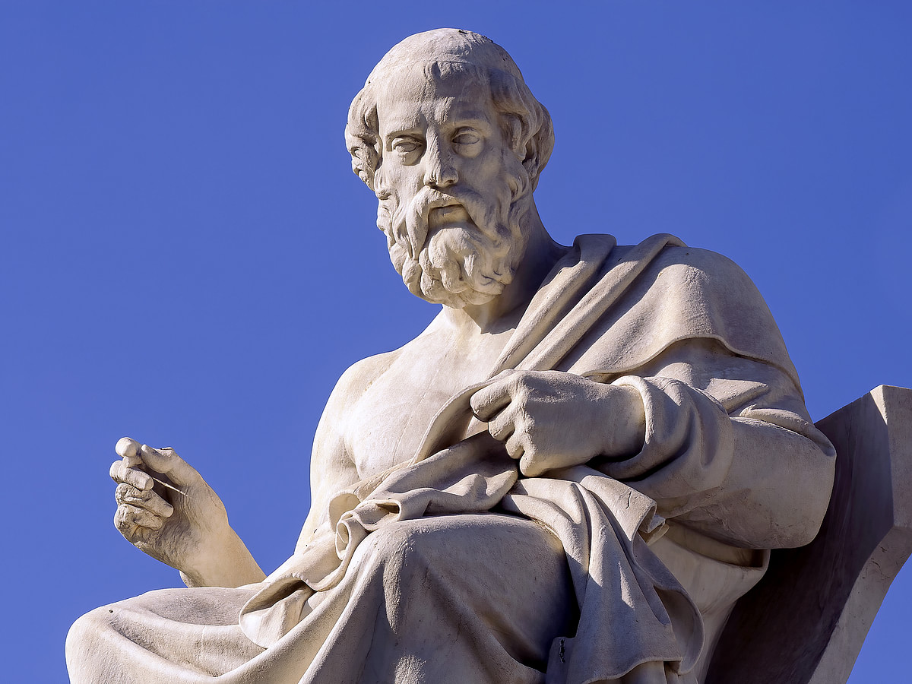

La Filosofia de Platon
La filosofía de Platón (427–347 a.C.) es una de las bases del pensamiento occidental. Discípulo de Sócrates y maestro de Aristóteles, su obra abarca temas como la realidad, el conocimiento, la ética, la política y el alma. Aquí tienes un resumen estructurado de sus ideas clave:
1. Teoría de las Ideas (o Formas)
- El mundo sensible (lo que percibimos) es imperfecto y cambiante.
- El mundo inteligible (de las Ideas) es eterno, inmutable y la verdadera realidad.
- Ejemplo: Todos los "caballos" que vemos son copias imperfectas de la Idea de Caballo.
- La Idea del Bien es la más elevada (como el sol que ilumina todo).
Fragmento clave (República, VI):
"El Bien no es la esencia, sino que está más allá de la esencia, en dignidad y poder."